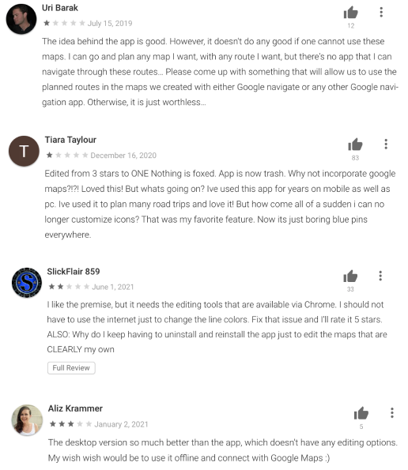

This project is a 3-week school project that focus on creating a new feature for Google My Maps by examining existing interface , interaction patterns, features and users.
Create and edit custom maps that is viewable on Google Maps
Travellers who use Google My Maps as their main application for creating travel routes and locations are unable to document their trip.
Three different interviews were conducted with intermediate users
Since this application is only available on android, I was limited by the quantity of research and had to resort to user reviews on the Play Store.
I learned that majority of users were either unaware that the Google My Maps application existed or that My Maps is fully leaveraged only when it is used with Google Maps. Many users were fustrated about existing features on the mobile application.
To narrow the scope on a new feature, I first looked at topics that I were relevant to travelers and proceeded to eliminate options given the different criterias.
1. I looked through journals and blogs to find common actions that travelers do or want to know about when they travel.
2. As Google My Maps is a supporting application of Google Maps, I had to avoid redundant features. I began to eliminate topics that already existed in Google Maps would not add value to Google My Maps.
3. With the purpose of the app focused on travelers who have already planned out majority of their trip and is on-the-road headed to their next location, any interaction with the app is mainly used to view or add information. I eliminated a few more option.
A leading journaling app that can be used for daily life, speicifc events, or trips. Some features include inputing temperature, weather, moon phase, and altitude. One of the key features is the ability to view previous entries through calendar, timeline, or photos.
An easy to use travel log that automatically plots your journey on the map according to the location of the photos that you have taken. This application is great for adding simple notes along with your pictures.
Capture memories and document important information that can be refered back to after the trip.
This feature allow users to create journal entries at their desired location.
Sam arrives at Victoria and is feeling very excited about the beautiful weather and want to documents her emotions. Before she heads on the road to her next destination, Sam wants to use the new journal feature on My Maps to
Sam is an avid traveler that wants to document her travels. Through this new feature Sam can gather information at each location to build stronger memories.
While I did maintain most of the previous design patterns from Google My maps, I made some minor changes to a couple heuristic problems (based on Nielsen Norman Group's 10 usability heuristics for user interface design) that I found in the application.
The old popup has text orphans which can cause uncomfortable reading and visual imbalance to the user. To avoid the problem, I increased the line width so that all of the text appeared in one line.
The original 'Cancel' button had the same visual design as the 'OK' button, however in the new interface the 'Cancel' button is visually different. This difference allows the primary action 'save' to have stronger visual weight.
After this project, I had realized the importance of understanding the relevant users of an application before delving into problem idenfitication. In the beginning, my research was based around applications available in the App stpre because I personally used an Apple device. It was not until the end of my research, I stumbled upon an old blog post that mentioned the Google My Maps application in the playstore, that led to duplicate propsed design solutions. This was a lesson learned to not forget about android users as well as becoming aware of research biases.
Questions and problems that remains in my head are, why does this application not exist for iOS users? How can designers build a better usability connection between Google Maps and Google My Maps?
{kind=link}
{kind=link}
{kind=link}
{kind=link}